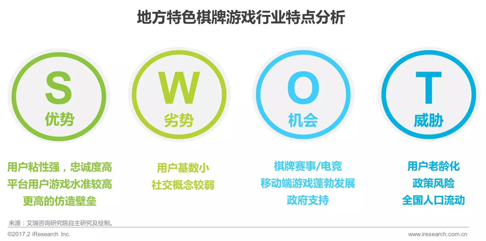
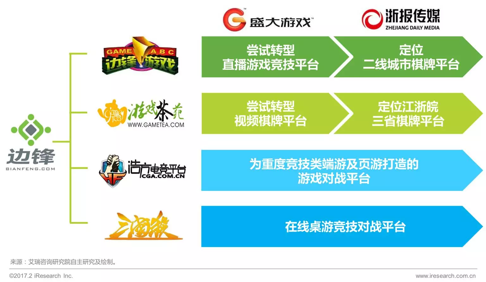
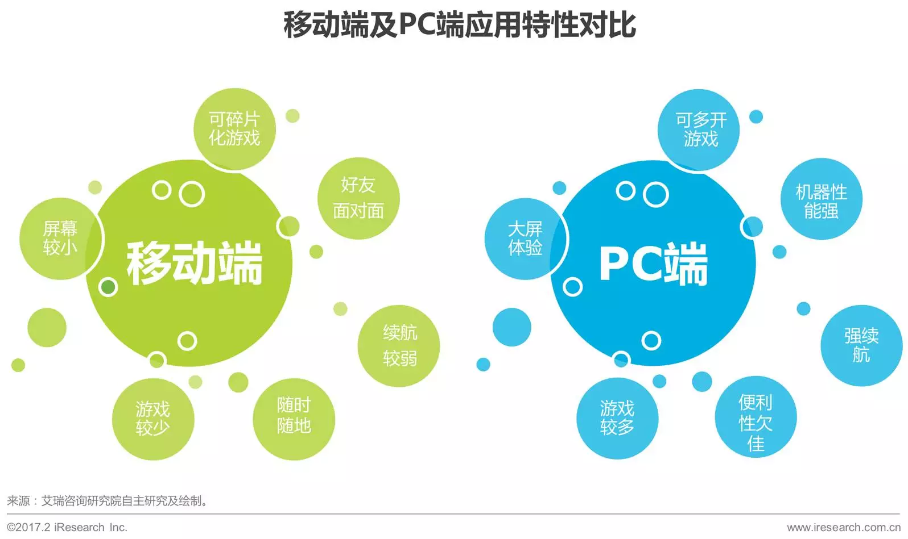
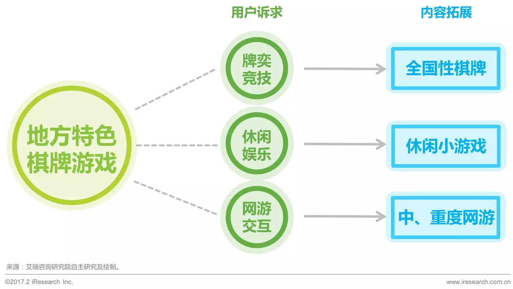

核 心 内 容
行业篇：1. 2016年中国地方特色棋牌游戏市场规模总计38.4亿，地方特色棋牌游戏用户规模移动端1.57亿略高于PC端1.55亿；2. 2016年前后，地方特色棋牌平台迎来资本热，行业热度迅速升温；3. 地方特色棋牌游戏将向移动化、社交化、多元化不断发展；
用户篇：1. 约85%的地方核心用户接触线上棋牌的时长在一年或以上；2. 中国地方特色棋牌用户PC端渗透率80%，移动端渗透率高达91.1%；3. 59.6%的中国地方特色棋牌游戏用户为棋牌游戏付过费。
行 业 分 析
? 中国线上棋牌游戏进入再创新期
1998年联众游戏上线，中国线上棋牌游戏市场正式启动。在这18年间不同的棋牌游戏平台不断推陈出新，各种别具特色的运营模式也不断地为市场带来了活力。2016年在闲徕等新兴平台的推动下，棋牌游戏行业有望迎来再创新与再突破。
? 线上棋牌游戏行业产业链
? 2016年市场规模约38.4亿元，用户超1.5亿
据艾瑞数据分析得出，2016年中国地方特色棋牌游戏用户PC端规模约1.55亿人、移动端规模约1.57亿人，两大平台受用户欢迎程度相仿。而在市场表现方面，地方特色棋牌游戏在移动市场的表现则小幅领先于PC端，可见各平台在移动产品的推广及移动支付的开发上已趋于成熟。
? 地方特色棋牌游戏行业特点分析

? 近年来地方特色棋牌游戏平台再迎资本投资热潮
之前已经提到国内资本市场在过去的几年中已经发起了多起针对棋牌公司的大规模收购。据艾瑞咨询统计，其中至少有4例收购意向是针对地方特色棋牌游戏平台的。由此可见，地方特色棋牌行业在经历了多年的沉寂之后再迎资本投资热潮。
推动地方特色棋牌行业再次受到资本的重视的原因主要有二点：
1、地方特色棋牌游戏市场盈利丰厚且稳定。在经历了十余年的考验后棋牌市场发展早已趋于稳定，受益于平台用户的高粘性以及相对较低的平台运营成本，在线棋牌企业往往具有丰厚且稳定的盈利能力，能够有效提高收购者的整体财务表现。
2、地方特色棋牌市场拥有独特的用户群体。考虑到多数二线以下城市居民平时的网络活动并不丰富，地方特色棋牌游戏平台则是接触到这群用户的绝佳途径。因此，收购地方特色棋牌游戏平台不仅能够给资本方带来稳定的收益，更可以为其吸收一大批珍贵的用户资源。
? 地方特色棋牌游戏用户具有较高的平台忠诚度与游戏水准
? 行业内平台各具特色，差异化发展趋势明显
我们选取了四家目前市场热度较高的地方特色棋牌游戏平台做平台数据对比，不难看出目前地方特色棋牌游戏平台差异化发展趋势十分明显。大平台更注重平台的覆盖区域与地方化程度，而小平台则相对更注重精品化的发展并不断寻求差异化发展方向。
同城游拥有着极高的地方特色棋牌游戏保有量及覆盖区域数，加以超过九成的地方特色棋牌游戏占比率，是当之无愧的地方特色棋牌游戏领先企业。
游戏茶苑的表现与边锋游戏较为相近，平台中都融入了较多全国性棋牌游戏来增加内容深度。这两家平台的主要差异还是体现在覆盖区域上，茶苑以江浙皖三省为主要发展目标，而边锋游戏则覆盖了全国范围内大批热衷棋牌的二线城市。
闲徕作为新进平台，在保证自身平台地方特色棋牌游戏占比率的同时，也试图从业务模式差异化的角度来挖掘全新用户群体。
典型平台案例
『 同 城 游 』
? 以地方特色棋牌游戏为核心，同时涉足多种游戏内容
目前同城游平台的游戏类型主要以棋牌类游戏及休闲类游戏为主，未来也会考虑对移动端中、重度游戏的开发。

? 地方特色游戏棋牌品类最多、覆盖地区最广的地方游戏平台
通过十余年的经验积累，同城游的产品策略早已成熟。其中多而广的棋牌品类开发及接地气的产品、规则设定是帮助同城游多年来持续吸引地方特色棋牌用户的主要特点所在。
『 边 锋 』
? 品牌战略帮助集团实现市场扩张
边锋集团在线上对战平台市场所使用的多品牌战略是较为成功的。旗下不仅拥有边锋游戏及游戏茶苑两大棋牌平台，同时还有用于端游对战的“浩方对战平台”及桌游用户所熟知的“三国杀online”等。
通过多个品牌平台的运作，边锋集团成功覆盖了大量线上对战平台用户。在经历了两次重大并购之后，在新东家的重塑与转型下边锋游戏与游戏茶苑两家平台的差异化愈发明显，边锋集团的多品牌战略为自己在地方游戏市场争得了一席之地。

『 闲 徕 』
? 打造熟人模式差异化平台，开拓全新线上棋牌发展道路
帮助闲徕棋牌在短期内发光、并在线上棋牌领域占有一席之地的最主要因素就是闲徕针对线上熟人棋牌所定制的“线上棋牌室模式”。线上棋牌室模式即一种通过消费虚拟房卡来允许好友间在线上共同进行棋牌游戏的线上棋牌模式。
线上棋牌室是对线下棋牌室的有力补充，闲徕成功地解放了牌友之间打牌的空间约束，让大家随时随地都能“坐”在一起打上几局。也正因此，闲徕平台在2016年后半年凭借自己的高光表现，吸引到了昆仑万维逾十亿的收购意愿。
用 户 分 析
? 核心用户占比略高
中国地方特色棋牌游戏用户可以区分为核心用户与泛用户。其中核心用户最主要玩的游戏类型是地方特色棋牌游戏，而泛用户最主要玩全国性棋牌游戏，但同时也经常玩地方特色棋牌游戏。调研数据发现，核心用户的占比为55.3%，略高于泛用户的44.7%。
? 男性为主，年龄多在26-35岁之间
中国地方特色棋牌游戏用户中男性居多，占比达64.8%，但核心用户中女性TGI较高。从年龄来看，26-35岁之间的用户超过50%。
? 视频、社交类活动最常见，半数用户玩线下棋牌
除游戏外，中国地方特色棋牌游戏用户的娱乐活动多在视频和社交方面。
值得注意的是，经常进行线下棋牌活动的用户占比略高于五成，说明一半左右的用户会同时在线上和线下玩棋牌游戏。
? 核心用户更偏好棋牌
相比于其他游戏，棋牌游戏是耗时的重点，核心用户在非棋牌游戏上的耗时更少。
? 付费率过半，主要用来买虚拟货币
? 推荐是用户认知新棋牌游戏的主要渠道
中国地方特色棋牌游戏用户主要通过朋友推荐、游戏平台内推荐和应用商店排行榜/推荐等被动的推荐方式认知新的棋牌游戏，不主动认知新游也是用户忠诚度较高的体现之一。

发 展 趋 势
『 移 动 化 』
? 碎片化的移动游戏与地方特色棋牌游戏结合日渐成熟
艾瑞网络调研显示，目前中国地方特色棋牌游戏用户中会使用移动设备游戏的用户已高达91.6%。虽然其中大部分用户是PC、移动端的双向用户，但这一数据足以说明棋牌游戏近几年在移动端的发展已趋于成熟。
在用户培养日渐成熟之后，棋牌平台在移动端产品、功能上的开拓力度也必将加大。以同城游为例，旗下拥有多达500款PC端游戏而移动端游戏则仅有100余款。可见各地方特色棋牌游戏平台在产品移动化的道路上仍有一段路要走。
『 社 交 化 』
? 棋牌游戏在社交功能上的疲软表现有望得到改善
经过十多年的发展，当网络游戏已逐渐进入视频直播时代，棋牌游戏的社交互动功能却仍然停留在文字交流的初级阶段。因此，地方特色棋牌游戏平台未来加强社交化的发展趋势是可以预见的。
为满足平台用户的社交、交互需求，未来棋牌平台有望在PC、移动双平台开通语音交互功能。而在PC端受益于近年网络视频技术的不断提高，地方特色棋牌游戏平台甚至可能考虑将即时视频功能加入到棋牌游戏中。
『 多 元 化 』
? 除棋牌游戏外，平台已逐渐融入其他多元化游戏品类
地方特色棋牌游戏平台的用户普遍具备三大游戏娱乐诉求：牌奕竞技、休闲娱乐、网络交互。针对平台用户的以上三种诉求，地方特色棋牌游戏平台正逐渐展开转型，突破地方棋牌单一的游戏品类，开始向多元化游戏平台发展。
为更全面得满足用户在牌奕竞技方面的诉求，地方特色棋牌游戏平台逐渐将核心的全国棋牌品类加入平台；为进一步满足用户的休闲娱乐诉求，平台也纷纷开始打造形式多样的休闲小游戏供用户消遣；为满足用户在中、重度网游交互上的诉求，部分平台更是开始研发大型的端游、页游与移动游戏。可以看到，在地方游戏平台上游戏类型的多元化发展势在必行。

纹桃科技致力于棋牌游戏开发13年，拥有大量开发运营经验和大批成功案例。
想打造一款迅速盈利的棋牌游戏，欢迎咨询QQ/电话热线：18711739336
了解更多棋牌游戏行业信息：在线咨询>>


游戏产品
PRODUCTS

售后服务
SERVICE

技术支持
TECHNOLOGY

运营指导
OPERATING